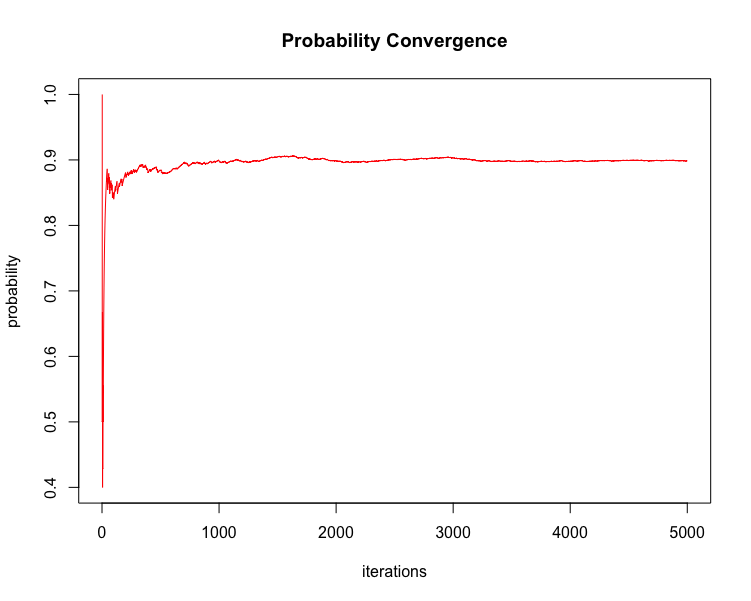

Author: Matthew Hoff
License: MIT

The Premise
This package provides functions & documentation for solving “The Bill Miller Problem” presented within the book entitled The Drunkard’s Walk: How Randomness Rules Our Lives, written by Leonard Mlodinow. More generally, the functions herein can be used to solve for, either analytically or by simulation, the likelihood of obtaining a winning streak of given length within a given number of attempts, attempted by a specified number of individuals.
The premise of this story goes that Bill Miller (financier) was an amazing stock picker after having performed incredibly well - beating the market - defined as outperforming the S&P500 - each year over 15 consecutive years. As a result, he was celebrated and acclaimed by the likes of Forbes and others, who claimed that the likelihood of his ability to perform this well was 1 in 32,768, or ~0.0032%, which is roughly true is one considers only the individual, Bill Miller, picking stocks.
However, what Dr. Mlodinow understands is that there are many hedge funds all picking stocks and based on this fact, poses the question: “Out of 1000 stock pickers (coin tossers), what are the odds that 1 of them beats the market over 15 consecutive years?” The answer to which is roughly 3%.
Dr. Mlodinow then further refines this calculation by considering the scenario of beating the market 15 years consecutively or longer over a 40 year period; i.e. over 40 years and with 1000 traders, what is the probability that at least 1 trader will obtain a winning streak of at least 15 years with the odds of winning in a given year equal to 0.5. Based on this refinement, Dr. Mlodinow claims the odds are roughly 3 out of 4, or 75%; however, he provides no proof or evidence of this claim.
The resulting likelihood for any one person to beat the market within a definite start and stop time of at least 15 years in a single 40 year period, while larger than the 3% of his first calculation, is much smaller than the final proposed result of ~75%, which this package has been built to answer and results in a value of ~33%.
The Math
Part 1:
One must compute the odds of getting a run (Streak) of at least k heads out of N coin tosses where p (q = 1-p) is the probability of obtaining heads (tails) from the toss of a coin.
Mathematically,
S[N, K] = p^k + \sum_{j=1, K} \{ p^{(j-1)} (1-p) S[N-j, K] \}
which can be broken down recursively into the sum of terms:
S[n, k] = p^k + … = \sum_{j=1, k} \{ p^{(j-1)} (1-p) S[n-j, k] \} \text{ for } 1 \le j \le k
which is provided by odds_of_streak().
For more information on the math behind this recursive odds calculation, see this Ask A Mathematician post.
Part 2:
To calculate the likelihood that at least k out of M people will obtain a streak of at least j heads out of N coin tosses, one must perform the following:
- Calculate the PDF:
\mathrm{P}(M = k) = {M \choose k}p{k}(1-p){(M-k)}
Again, this is provided by odds_of_streak().
- Then, calculate the CDF:
\mathrm{P}(X \le x) = \sum_{i=0,x} \mathrm{pdf} \text{ for } {i \le x}
- And, finally, calculate the final result:
\mathrm{P}(X > x) = 1 - \mathrm{P}(X \le x) \text{; i.e. } (1) - (2)
which is provided by prob_of_at_least_k().
Example 1: Mathematical Proof
Load Package…
Calculate the likelihood of obtaining a winning streak of at least 3 heads out of 5 coin tosses given that the probability p (q) of heads (tails) is fair, i.e. p = q = 0.5.
pS <- odds_of_streak(num_coins = 5, min_heads = 3, prob_heads = 0.5)
pS
#> [1] 0.25
### NOTE:
# Example from "The Drunkard's Walk: How Randomness Rules Our Lives"
# tictoc::tic()
# odds_of_streak(40, 15, 0.5) = 0.000411981
# tictoc::toc() # 24713.89 sec elapsed (6.865 hours)Now calculate the probability that at least 1 person out of 8 people will obtain such a winning streak of 3 heads given that the probability of said streak is 0.25.
pK <- prob_of_at_least_k(N = 8, K = 1, p = pS)
pK
#> [1] 0.8998871
### NOTE:
# Example from "The Drunkard's Walk: How Randomness Rules Our Lives" continued...
# Result (1): P(X = k) where k = 0 is calculated as choose(n, k)*(p**k)*((1-p)**(n-k))
# P(X = 0) ~= 0.66 => P(X > 0) ~= 1 - 0.66 = 0.33Example 2: Simulation
Run a simulation on the problem, and return the set of resulting data
set.seed(1234)
sim_data <- run_simulation(
iters = 5000,
trials = 8,
sample_space = c(0, 1),
sample_size = 5,
run_value = 1,
run_length = 3
)
tail(sim_data)
#> iterations applicable_trials prob_of_zero prob_of_ge_one
#> 4995 4995 0 0.1017017 0.8982983
#> 4996 4996 2 0.1016813 0.8983187
#> 4997 4997 0 0.1018611 0.8981389
#> 4998 4998 1 0.1018407 0.8981593
#> 4999 4999 1 0.1018204 0.8981796
#> 5000 5000 0 0.1020000 0.8980000